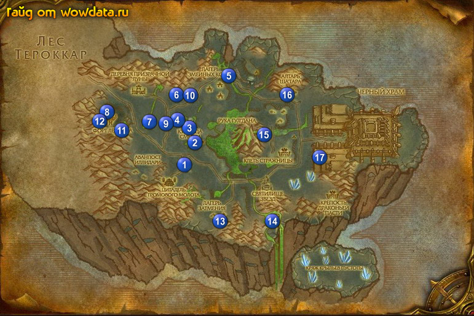

1) У вас должно быть около 60-65% на 70лвл
2) идите на юго-восток в Wildhammer Stronghold 1 (39,53)
3) около ворот у Командир звена Нуаинн начните <Окружены!> убивайте Боевой инфернал. Это элементарно т.к у них уже нету больше половины жизней обычно благодаря стражам. Когда закончите сдавайте этот квест и начинайте <Тайная миссия>
4) В городе уНаездник на грифоне Киеран начните <Развалины Скет'лона>
5) Южнее откройте пункт перелетов найдите Зорус Ревнитель и начните у него <Дух из машины.> затем идите в гостиницу и сделайте её домом
6) Поговорите с Целитель земли Софурус и начните <Рука Гул'дана> затем у Yoregarначните <Зачистка> пропустите <Путь Завоевания>
7) У Гномус (гном на скамейках) начните <Умопотрошительно!>
8) Пока вы в этой зоне вы должны убить 20 любых кабанов химер и скорпионов для <Зачистка> они повсюду поэтому перечислять координаты безсмысленно
9) Идите на северо-восток к Алтарь Проклятия 2 (42,45) у Torlok закончите <Рука Гул'дана> и начните <Разъяренные духи Огня и Земли>
10) Южнее места где мы сейчас стоим обитают Разъяренный дух огня (у зелёной лавы) и earth spirits (рядом с лавной и землёй). Поставьте [Тотем духов] и убейте их рядом с ним(нужно убить по 8 штук каждых) для <Разъяренные духи Огня и Земли>
11) Как закончите возвращайтесь в 2 (42,45) к Целитель земли Торлок закончите квест и начните <Разъяренные Духи Воды>
12) Немного севернее между двумя зданиями 3 (40,41) и 4 (38,38) течёт лавовая река за которой находится Неостывающий пепел для <Дух из машины.>. Также рядом вы можете найти Сквернопламенный деметродон для квеста <Умопотрошительно!>.
13) Идите на северо-восток к 5 (48,24) с обеих сторон моста есть Разъяренный дух воды, делайте тоже самое что до этого делали с огненными и каменными элементалами (убивайте их рядом с тотемом) для <Разъяренные Духи Воды>
14) Идите на запад к 6 (37,30) убивайте мобов ради [Записи командира Скет'лона, стр. 1] для <Развалины Скет'лона>
15) Идите на юго-запад к Магмовые поля 7 (32,39) и убивайте всех монстров которые нужны вам для выполнения <Зачистка> и <Умопотрошительно!> В том же месте делайте <Дух из машины.>
16) Если вам всё ещё нужны животные убивайте их по пути в Форт Легиона 8 (23,36) Там найдите связующее устройство легиона используйте [Ящик-сюрприз] и смотрите мини фильм для <Тайная миссия>
17) Оставляйте [Знак Саргераса] которые вам выпадают потом за них можно будет получить опыт и репутацию
18) Телепортнитесь в Цитадель Громового Молота 1
19) Закончите <Зачистка> в здании рядом с гостиницей
20) Найдите Зорус Ревнитель и закончите <Дух из машины.>, начните <Вестники Лунной Тени> затем поговорите с Гномус и закончите <Умопотрошительно!> начните <Смертерадон на второе>
21) Теперь оденьте очки которые вам дал Зорус Ревнитель и убивайте Предвестник Долины Призрачной Луны для квеста <Вестники Лунной Тени>
22) Как только закончите сдайте квест у Зорус Ревнитель и начните <Терон Жестокосердный - Правда и Вымысел.>
23) У Киеран Наездник на грифоне завершите <Развалины Скет'лона>, и начните <Найти дезертира> за воротами у Командир звена Нуаинн закончите <Тайная миссия> начните <Сборка бомбы>
24) Вы должны бить очень близки к 70му лвл иметь около 85%
25) Идите на северо-восток к Целитель земли Торлок 2 (42,45) и закончите <Разъяренные Духи Воды> начните <Разъяренные духи Воздуха> затем бегите на запад к дороге 9 (35,39) и вы увидите Паршах закончите <Найти дезертира> и начните <Тотем Азгара>
26) Идите на северо-восток к обломкам, на востоке лагеря 10 (40,31) убейте Азгар ради его тотема затем бегите там где мы убивали водных элементалей к мосту 5 (48,24) за ним в заве вы найдёте Большой сквернопламенный деметродон для квеста <Смертерадон на второе>
27) Бегите на юго-запад к Паршах закончите <Тотем Азгара> Начните <Ветвь Лиантэ>
28) бегите на северо-запад в форт 8 (22,35) там вы найдёте кусок брони рядом с большим роботом , затем бегите на восток 11 (26,41) и под водой возьмите [Энергетический сердечник сквернобота] для <Сборка бомбы>
29) Бегите в Цитадель Громового Молота 1, у Командир звена Нуаинн закончите <Сборка бомбы>
30) У гнома внутри закончите <Смертерадон на второе> и начните <Гвоздь программы>
31) Вернитесь в Форт Легиона найдите зелёный круг 12 (22,39) и используйте [Бомба Скверны] ради <Перебей демонов!>
33) Телепортнитесь по руне обратно в Цитадель Громового Молота 1, поговорите с Командир звена Нуаинн и закончите <Перебей демонов!> начните <Кузница Смерти>
34) Идите на юго-восток в Лагерь Затмения и убивайте кровавых эльфов пока не упадёт [Ключ Лиантэ]. затем идите в 13 (47,71) для квеста <Ветвь Лиантэ>
35) Идите к Поля Крыльев Пустоты и убивайте Разъяренный дух воздуха, используйте тотем, как раньше, чтобы заполучить их сущность для <Разъяренные духи Воздуха> затем идите на юг к 14 (58,70) Древний дух Долины Призрачной Луны и закончите <Терон Жестокосердный - Правда и Вымысел.> следующие 3 части проигнорируйте
36) Идите к 15 (56,43) и убейте Хребтоскверн Старший для <Гвоздь программы>
37) Теперь идите к Алтарь Ша'тара 16 (61,30) и откройте там пункт перелетов (только если вы альдор)
38) У Предвестник Саронен начните <Знак Саргараса> если у вас есть 10 штук сразу закончите этот квест.
39) Внутри здания у Анахорет Кейла начните <таблички Баа'ри> У Воздаятель Алуумен, начните <Клан Пеплоустов> затем у Onaala начните <Тренировочные площадки Карабора>
41) Бегите строго на юг из города и вы попадёте в Руины Баа'ри, убивайте Пеплоуст-шаман, Пеплоуст-воин и Пеплоуст-укротитель для <Клан Пеплоустов> и собирайте [Фрагмент таблички Баа'ри] для <таблички Баа'ри>
42) Идите ко входу в Черный храм на первом повороте сверните направо 17 (68,50) и убивайте демонов для <Тренировочные площадки Карабора>
43) Вернитесь в Алтарь Ша'тара к Анахорет Кейла закончите <таблички Баа'ри> Идите к Aluumen и закончите <Клан Пеплоустов> затем закончите <Тренировочные площадки Карабора>
45) Не знаю как вы но я уже стал 70 лвл вы уже должны быть очень близко к этому если не стали до сих пор
46) Летите в Цитадель Громового Молота 1
47) Идите к гному на скамейках и закончите <Гвоздь программы>
48) Идите к Целитель земли Торлок и закончите <Разъяренные духи Воздуха>
49) Теперь бегите к Башня Кузницы Смерти 3 (40,41) наверху у Штормер Эван Дикокрыл закончите <Кузница Смерти>
50) Бегите по дороге и ищите Паршах закончите у него <Ветвь Лиантэ>